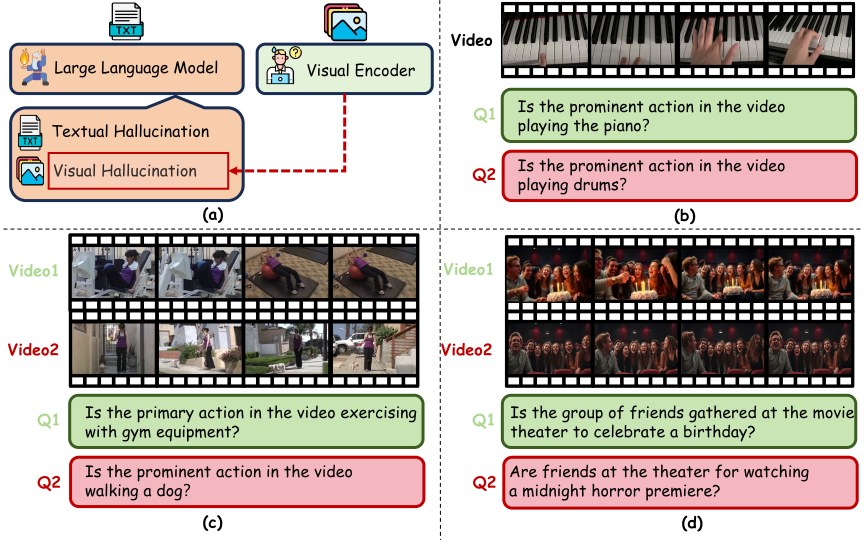
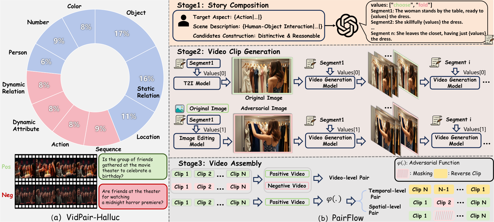
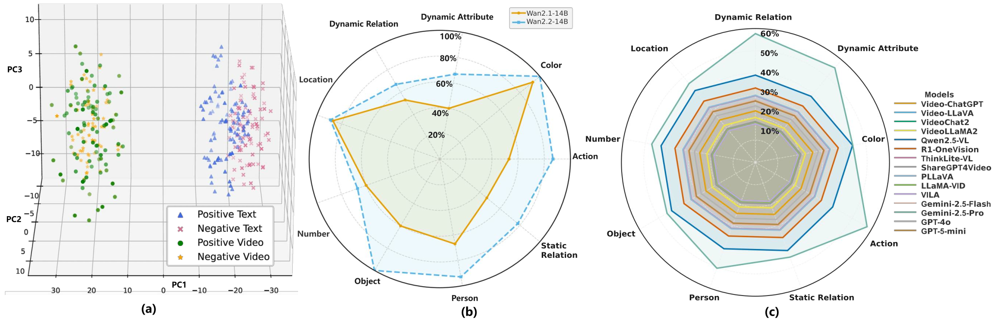

Scene priors can affect answers.
When the surrounding scene is familiar, a model may rely on likely events. Paired clips test whether the answer changes with the visible evidence.
Abstract
VidPair-Halluc follows the PairFlow construction described in the paper: 15-second videos are organized into paired contrasts where the surrounding context is intended to stay comparable while the answer-relevant visual evidence differs. The benchmark spans object, action, color, number, person, location, static relation, dynamic relation, dynamic attribute, and temporal sequence reasoning.
Motivation
The paper studies cases where model answers may follow likely scene priors instead of the visible content. VidPair-Halluc evaluates this behavior by asking comparable questions over paired videos whose answers depend on controlled visual differences.

When the surrounding scene is familiar, a model may rely on likely events. Paired clips test whether the answer changes with the visible evidence.
If the whole video changes, unrelated cues can affect the answer. The paired setup aims to keep context stable while changing the foreground truth condition.
The benchmark includes binary, multiple-choice, and open-ended QA, allowing the same type of visual contrast to be evaluated under different response formats.
PairFlow
PairFlow composes a scene story, generates matched clip segments, and assembles paired videos. The construction is designed to keep the surrounding situation plausible while changing the visual evidence needed to answer.


Pair construction
Each pair keeps a familiar visual context and changes the foreground evidence, spatial relation, or temporal order that determines the expected answer.
The same backyard grill context supports different answers only because the visible hand action changes.
The bookshelf, subject, and framing stay aligned while the evidence changes from reading to returning the book.
Paper results
The paper reports dataset-level background-control measurements, QA coverage across response formats, and model results under paired video evaluation.


Table 1
Binary, multiple-choice, and open-ended QA follow the paired-video structure with visual similarity control and paired contrasts.
Table 2
| Metric | Random | Controlled |
|---|---|---|
| DINOv2 ↑ | 0.21 | 0.94 / 0.81 |
| LPIPS ↓ | 0.68 | 0.15 / 0.15 |
| SSIM ↑ | 0.24 | 0.76 / 0.90 |
Table 3
| Method | Binary wAcc ↑ | MCQ F1 ↑ | Video Acc ↑ | Open Desc. ↑ |
|---|---|---|---|---|
| Human | 74.32 | 89.21 | 79.66 | - |
| Gemini-2.5-Pro | 49.15 | 67.32 | 43.36 | 54.68 |
| GPT-5-mini | 29.33 | 64.82 | 45.28 | 49.33 |
| Qwen2.5-VL-Instruct | 41.66 | 61.50 | 42.86 | 45.07 |
| Video-LLaMA2 | 21.48 | 62.91 | 42.86 | 40.85 |
Taxonomy showcase
These examples were selected from the clean preview pool after frame-level inspection. The page prioritizes visually legible pairs across different reasoning axes, while avoiding repeated examples of the same contrast type.
Object
Both clips keep the same desk work setup with a seated person, laptop, notebook, and window light. Video A places a calculator on the table, while Video B keeps the scene structure but replaces that object with a red stress ball.
Action
The backyard grill, open lid, food placement, and cook remain consistent across the pair. Video A emphasizes grilling sausages on the grate, while Video B changes the queried action to turning the sausages with a utensil.
Color
Both clips use the same soccer-practice background with a child drinking near the field. The highlighted visual difference is the bottle color: pink in Video A and green in Video B.
Number
The kitchen counter, bowl, knife, and food-prep action stay matched. Video A shows a single onion being handled, while Video B changes the visual count to two onions in the same preparation scenario.
Location
The person continues the same quiet writing task across both clips. The background evidence changes the location: a classroom-like board and desks in Video A, and library shelves around the same study behavior in Video B.
Static relation
The vending-machine aisle and product shelves remain the shared context. Video A shows the person standing in front of the machine, while Video B changes the spatial relation by placing the person lower, crouched beside the machine.
Temporal sequence
The artist, easel, brush, and studio framing stay matched. Video A progresses from a blank canvas toward a visible blue stroke, while Video B reverses the order so the same visual states imply the opposite temporal sequence.
@article{huang2026no,
title={No Place to Hide: Benchmarking Video Hallucination with Background-Controlled Pairs},
author={Huang, Haojian and Chen, Harold Haodong and Luo, Meng and Du, Junjia and Xu, Shanqing and Chen, Ziheng and Huang, Yanxiang and Li, Yinchuan and Chen, Ying-Cong},
journal={arXiv preprint arXiv:2606.31933},
year={2026}
}